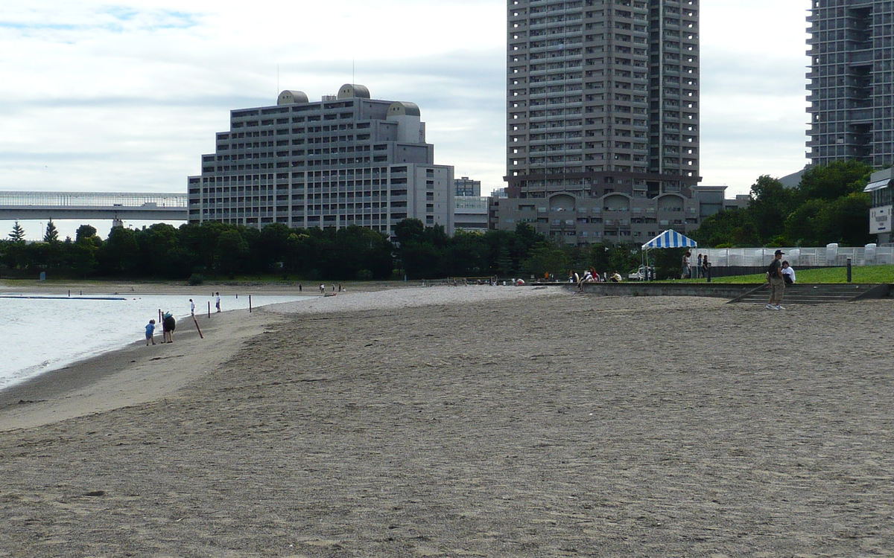
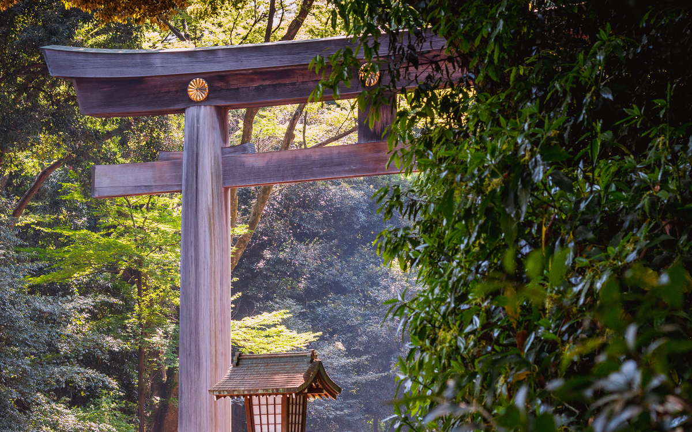
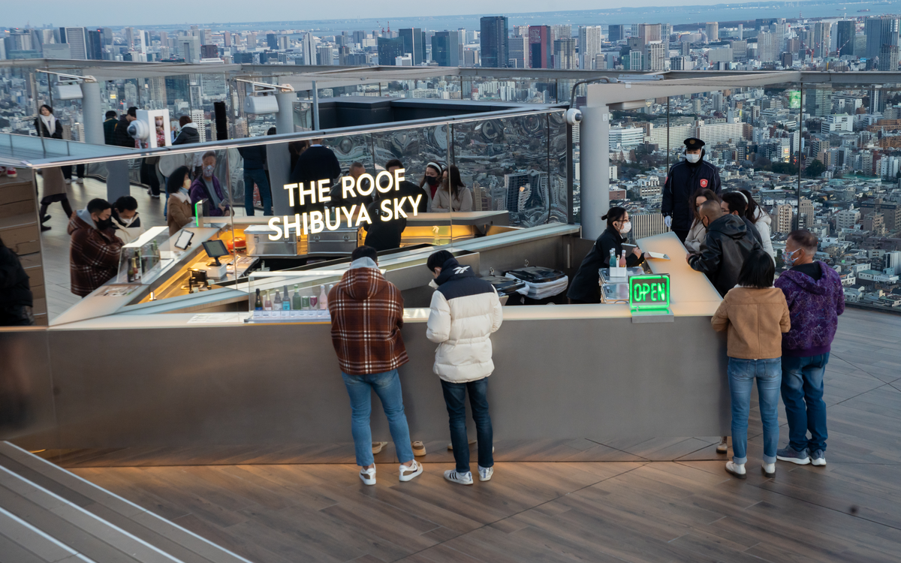
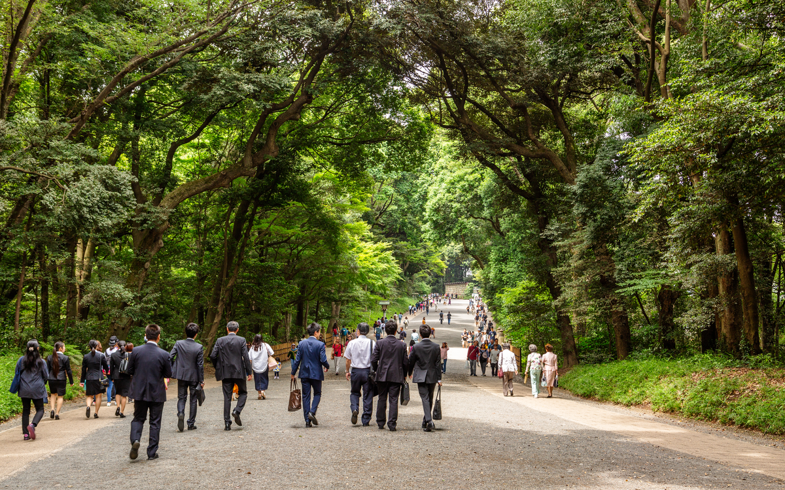
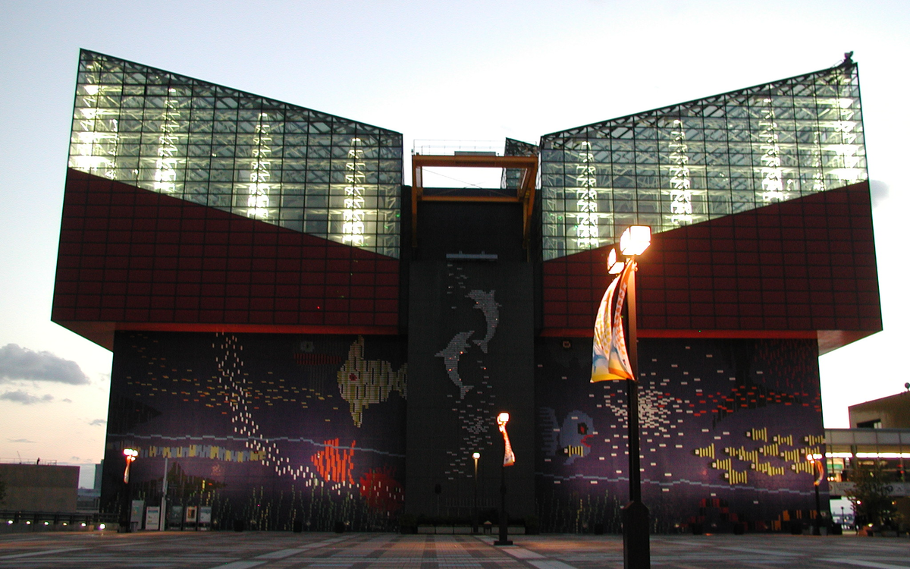

Japan Family Travel Plan (June 22 → July 8)
10, 8, 1.Trip at a Glance
- Bases:
- Grand Nikko Tokyo Bay Maihama
- The Park Front Hotel (Universal Studios Japan)
- Travel structure:
- Tokyo base: June 23–27
- Travel day: June 28
- Osaka base: June 28–July 8
- Theme parks included:
- 1 day Tokyo Disneyland
- 2 days Tokyo DisneySea
- 2 days Universal Studios Japan
Monday — June 22: Fly to Japan (travel day only)
Plan
- Fly + jet lag management (no sightseeing planned in this itinerary since you arrive in Japan on Tuesday).
- Bring kid “survival kits”: snacks, wipes, small toys/books, and a spare outfit.
- Pre-plan tomorrow: set out a simple outfit + one quick “if energy allows” option for Tuesday evening.
Tuesday — June 23: Arrive NRT 14:55 → Hotel (Maihama) + easy evening

Your Tokyo base in the Maihama/Disney area—ideal for an easy arrival evening.
Arrival timing
- Arrive: Narita (NRT) at 14:55 (Tuesday, June 23).
- Typical NRT → hotel door-to-door: ~75–120 min (longer in rush hour or with multiple transfers).
- Plan for: immigration + bags + kids + restroom breaks = ~45–90 min at the airport.
Getting to the hotel (family-friendly options)
- Option A (easiest with kids): Airport Limousine Bus
- Take a Limousine Bus from
NRTto theTokyo Disney Resort / Maihamaarea. - Then short taxi/shuttle/walk to Grand Nikko Tokyo Bay Maihama (depending on drop-off).
- Time: typically ~60–90 min on the bus + last-mile.
- Take a Limousine Bus from
- Option B (reliable rail): Narita Express + JR
Narita Express (N'EX)→Tokyo StationJR Keiyo/Musashino Line→Maihama Station- Taxi/local shuttle to the hotel.
- Time: typically ~75–110 min + transfers/waits.
Optional stretch (Skytree + Asakusa, only if you have energy)
- Time check: with an NRT landing at 14:55, aim to be checked into the hotel roughly by 17:30–18:30. Only do this if you can start the outing by ~18:30 at the latest.
- Short Skytree Town loop (aim 60–90 min total).
- If you want one indoor stop: Sumida Aquarium (~45–90 min).
- Quick Nakamise Street snack stroll in Asakusa (~30–45 min), then head back early.
- If kids get tired, skip this and stay in the hotel/Ikspiari area.
Easy evening ideas (low-effort)
- Dinner + stretch: Ikspiari (~1–2 hours) only if you’re checked in and everyone has energy (best start ~18:00).
- Prep for the next morning: set out clothes, charge batteries, pack a small day bag.
Family of 6 tips
- On arrival day, prioritize food + showers + early sleep over sightseeing.
- Have one adult handle tickets/transport while another focuses on kids/bathrooms.
- Keep one small “airport bag” accessible: wipes, snacks, spare clothes, chargers.
Hotel/area tips
- If you use rail, aim to reach
Maihamabefore dinner time to avoid late-night transfers. - Consider luggage forwarding for easier station navigation with kids.
Wednesday — June 24: Tokyo Disneyland (full park day)

Big classic Disney rides + shows (built for family rotations).
Proximity & timing
- Everything is inside
Tokyo Disneyland(easy to cluster attractions). - Hotel → Disneyland: typically ~10–25 min door-to-door from the Maihama area.
- Park time budget: ~7–10 hours.
- Tip: arrive 30–60 min before opening to reduce the earliest queues.
Disneyland priorities (family-friendly rotation)
- Older-kid headliners:
Big Thunder Mountain,Indiana Jones Adventure,Pirates of the Caribbean. - Show + break strategy: pick 1 parade/show and treat it as your daily reset.
Parent rotation suggestion
- 2 adults rotate between big rides while another handles snacks/stroller and a backup indoor option.
- Use the toddler's rest window for the longest queue attraction first.
Family of 6 tips
- Stroller + baby basics: pack wipes and a spare outfit for the quick messy moments.
- Meal timing: aim for a sit-down meal slightly before the main lunch rush to avoid long lines with a 1-year-old.
- Hydration & shade: take micro-breaks every ~90 minutes.
Venue tips (Disneyland)
- If crowds are heavy, do a "land loop": go where you can move fastest, then lock in your show/parade time.
Thursday — June 25: Tokyo DisneySea Day 1

Two-day plan with strong indoor options (Mermaid Lagoon) for rain breaks.
Proximity & timing
- Everything is inside
Tokyo DisneySea(minimal travel between attractions). - Hotel → DisneySea: typically ~10–20 min door-to-door from the Maihama area.
- Park time budget: ~7–9 hours.
- Tip: arrive 30–60 min before opening to reduce the longest queues.
DisneySea priorities
Journey to the Center of the Earth(~20–45 min incl. waits)Nemo & Friends SeaRider(~20–40 min incl. waits)Toy Story Mania(~15–35 min incl. waits)Mermaid Lagoonindoor play (~45–75 min) — excellent for rain/cooler breaks
Parent rotation suggestion
Indiana Jones(~20–45 min incl. waits)Tower of Terror(~20–45 min incl. waits)
Family of 6 tips
- Pick one indoor anchor (Mermaid Lagoon) for naps, feeding, and rain breaks.
- Use a two-adult rotation: 2 adults do a big ride while others do a kid zone, then swap.
- Keep a mobile battery per parent for maps, tickets, and photos.
Venue tips (DisneySea)
- Prioritize the one attraction with the longest typical waits early, then fill with shorter queues.
- Rain plan: Mermaid Lagoon + indoor shows first; save outdoor areas for gaps in weather.
Friday — June 26: Tokyo DisneySea Day 2 (relaxed pace)
Proximity & timing
- Still an in-park day; keep it a bit lighter than Day 1.
- Park time budget: ~6.5–8.5 hours with a rest break.
Focus areas missed
Arabian CoastMediterranean HarborAquatopia
Lunch
Volcano Restaurant(easy seating, ~60–90 min incl. a calm meal)
Evening
- Early return recommended; rest night (aim back to hotel by ~7–8pm).
Family of 6 tips
- Make this the photo + wandering day—less rushing, more breaks.
- Let each older kid pick one “must-do” to keep everyone invested without over-scheduling.
Venue tips
- If weather is bad, focus on the most covered/indoor areas and do shops last.
Saturday — June 27: Odaiba + teamLab + Gundam

Easy waterfront stretch + sunset-style atmosphere.
Proximity & timing
- Odaiba is a “loop” day: close stops by walk/short local transit.
- Time budget: ~6–8 hours (teamLab sets the pace).
Plan
- Walk from hotel: allow 5–10 min to the first attraction.
teamLab Planets TOKYO— allow 90–120 min (entry + breaks).- DiverCity Tokyo Plaza / life-size
Gundamarea: travel between stops ~10–15 min walk; time budget 45–60 min. - Indoor backup (if needed):
Legoland Discovery Center Tokyo(~60–120 min). - Sunset walk: Odaiba Seaside Park (~30–45 min).
Sunday — June 28: Shibuya + Harajuku + Meiji Shrine (buffer day)

High-energy Tokyo landmark and easy “first Shibuya” stop.

Calm forest walk—great stroller-friendly reset after Shibuya.

Observation views that usually work well for older kids.

Open green space—ideal as a low-stress park option.
Proximity & timing
- Compact cluster:
Shibuya → Harajuku → Meiji Shrine. - Transit between stops: 10–30 min each hop (mostly train + short walks).
- Day length: ~7–9 hours.
Travel
- Typical hotel → Shibuya commute: ~35–55 min door-to-door.
Morning
- Shibuya Crossing
- Hachiko Statue
- Shibuya Sky (~45–90 min incl. entry window + viewing; book ahead)
Lunch
Shibuya Parcofood hall (plan ~60–90 min incl. kids/snacks)
Afternoon
- Meiji Shrine (~60–90 min)
- Then Harajuku (~45–90 min)
- Snacks:
crepes,cotton candy - Optional cafe stop: Owl Cafe Akiba Fukurou (Akihabara) (~60–90 min; book/check age rules ahead).
- Optional cafe upgrade: Starbucks Reserve Roastery Tokyo (a “wow” coffee experience; ~60–90 min).
Evening option (kids + parent rotation)
- Kids dinner: Ichiran ramen (Shibuya) (~45–75 min; fast ordering, easy with kids).
- Parent rotation dinner: Sushi Sakaba Fujiyama (all-you-can-eat sushi) (~90–120 min).
- Optional adult-only break: love hotel near Shinjuku/Shibuya (choose an adult-only room for a reset).
- Nonbei Yokocho (~60–120 min)
Family of 6 tips
- Avoid the biggest crowds by aiming for late morning for Shibuya Sky and early afternoon for Meiji Shrine.
- Stroller strategy: use elevators in stations when available; keep a light rain cover handy.
- Snack plan: buy one “safe snack” per kid early so you’re not searching mid-meltdown.
Venue tips
- Meiji Shrine is a great cool-down after Shibuya—pace it as your quiet reset.
- Harajuku streets can be tight; if it’s busy, do a shorter loop and leave before peak.
Monday — June 29: Shinkansen to Osaka + check-in
Proximity & timing
- Long-distance leg first; that night’s activities are near
Universal City/CityWalk. - Overnight travel day total: ~5–7 hours door-to-door (plus check-in time).
Ride
Tokaido ShinkansenTokyo Station → Shin-Osaka Station(~2.5 hours)- Reserve seats with luggage space.
Evening
- Check into The Park Front Hotel.
- Shin-Osaka → USJ/Hotel area: typically ~20–30 min.
- Walk: Universal CityWalk Osaka and dinner (~1.5–2.5 hours total).
Tuesday — June 30: Kyoto historic district day

Higashiyama temple with classic Kyoto streets nearby.
Proximity & timing
- Focused on
Higashiyama:Kiyomizu-dera+Sannenzaka/Ninenzaka(close to each other). - Optional
Fushimi Inariis NOT in the same immediate area (only if energy/time allows). - Train (USJ/Osaka area → Kyoto): ~45 min; door-to-door often ~60–75 min.
Visits
- Kiyomizu-dera — time budget ~1.5–2.5 hours (viewpoints + stairs)
- Walk to Sannenzaka + Ninenzaka — combined ~60–90 min
Optional parent-rotation hike
- Fushimi Inari Taisha (~2–3 hours total incl. queues/stairs). Stroller note: lots of stairs/steep sections.
Family of 6 tips
- Plan a Kyoto “last mile”: consider taxi for the final stretch if kids are tired (Kyoto buses can be crowded).
- Start earlier than you think—stairs + heat + crowds add time fast with little ones.
- Carry a small hand towel and a change of clothes for the toddler (summer humidity + snacks).
Venue tips (Higashiyama)
- Sannenzaka/Ninenzaka are best as a slow “snack walk.” Keep a firm hand on little kids—sloped paths.
Wednesday — July 1: Nara deer day
Proximity & timing
- Main stops are in/around
Nara Park, so it’s very walkable. - Time budget: ~6–8 hours.
- Osaka → Nara: usually ~45–60 min (door-to-door can be ~60–75 min).
Plan
Family of 6 tips
- Set a rule: one deer cracker pack at a time (helps avoid getting swarmed).
- Bring wipes/sanitizer—kids will touch everything.
Venue tips (Nara)
- Deer can head-butt for food—keep crackers in a bag and teach kids to step back.
- Todai-ji is impressive but can feel long—plan a snack break immediately after.
July 2: Osaka Castle + Dotonbori

Big grounds + picnic-friendly lawns; good daytime anchor.

Neon canal stroll with easy street-food dinner options.
Proximity & timing
- Morning/early afternoon at
Osaka Castle, evening in the livelyDotonboricorridor. - Travel between these areas: typically ~25–35 min.
- Hotel → Osaka Castle area: typically ~20–25 min.
Visits
- Osaka Castle — time budget ~2–2.5 hours
- Evening: Dotonbori dinner and stroll (~2–3 hours)
- Food ideas:
takoyaki,okonomiyaki
July 3: Universal Studios Japan Day 1

Two-day plan focused on Nintendo World + Harry Potter/Minions.
Proximity & timing
- Staying at/near USJ: minimal commuting (walk/short shuttle).
- Full park day: ~8–10 hours.
Priority
Nintendo Worldentry early (plan ~2–3 hours to get in + hit highlights)- Then rotate through nearby lands based on wait times (~4–6 hours)
- Plan at least one show/meal break (~60–120 min total)
July 4: Universal Studios Japan Day 2
Proximity & timing
- Same park, no extra travel. Full day: ~7.5–9.5 hours.
Focus
Harry Potterarea (~2.5–3.5 hours incl. waits + walking)Minionsrides (~1.5–3 hours incl. waits)Shows(~30–60 min each; pick 1–2 depending on energy/weather)
July 5: Osaka Aquarium day

Major indoor day—great for weather and kid pacing.
Proximity & timing
- Cluster around
Tempozan/Osaka Bay(walkable). - Time budget: ~4.5–6.5 hours.
- Hotel → Tempozan/Aquarium area: typically ~15–25 min.
Plan
- Osaka Aquarium Kaiyukan — time budget ~2.5–3.5 hours
- Nearby: Tempozan Ferris Wheel + harbor walk
- Ferris wheel block: ~45–75 min; harbor walk: ~30–45 min
July 6: Kyoto bamboo forest + Monkey Park

Signature bamboo path; best early before crowds.
Proximity & timing
- One
Arashiyama-area day: bamboo + optional viewpoint/hike are close if energy is good. - Time budget: ~6–8 hours (longer if you do Monkey Park).
- Osaka → Arashiyama: typically ~1.5–2.0 hours door-to-door.
Visits
- Arashiyama Bamboo Grove — ~1.5–2.0 hours
- Optional hike: Iwatayama Monkey Park — ~1.5–2.5 hours incl. walking/queues
- Stroller note: can be difficult due to steps/steeper paths; consider carrying or skipping.
Family of 6 tips
- Go early if possible—bamboo paths are best before crowds.
- If the toddler naps in the stroller, consider skipping Monkey Park and adding a riverside break instead.
Venue tips (Arashiyama)
- Monkey Park: keep food hidden and follow staff rules; it’s a real hike.
July 7: Free flex day options (Osaka / Shinsaibashi) + souvenirs
Proximity & timing
- Keep it in
Osaka city center(Shinsaibashi) so it connects well to your Dotonbori plans. - Stay in the
Shinsaibashi ↔ Dotonboricorridor to avoid moving districts. - Hotel → Shinsaibashi: typically ~20–25 min.
- Time budget: ~3–5 hours for shopping/snacks/breaks, then a relaxed evening.
Choose one (daytime)
- Shopping day
- Or visit: Shinsaibashi
Souvenir + relax plan (evening)
- Return to a favorite area you already like (no extra transit if you can help it).
- Pack early (budget ~30–60 min for packing/admin).
- Night walk: Dotonbori revisit (~1.5–2.5 hours).
- Kids fast dinner (ramen, quick split): pick one — Ichiran ramen (Shinsaibashi area) OR Ippudo (Shinsaibashi). (~45–75 min total).
- Parent rotation (optional): Sushitetsu Shinsaibashi (all-you-can-eat sushi) (~90–120 min).
- Optional adult-only break: love hotel near Shinsaibashi/Namba.
July 8: Departure day
Proximity & timing
- Flight: KIX at 07:35.
- Because it’s early, plan to arrive at KIX by ~05:35 (2-hour buffer), which usually means leaving the hotel around ~04:00–04:30.
Getting to KIX (best options for 07:35)
- Option A (recommended for early flights): Taxi / private transfer
- Door-to-door, no transfers with sleepy kids.
- Typical: ~55–75 min depending on traffic.
- Tip: pre-book a large vehicle for a family of 6 + luggage.
- Option B: Train (works, but check first-train timing)
- Route usually involves
Universal City→ transfer(s) →JR Airport RapidorNankaitoKIX. - Typical ride time once onboard: ~70–95 min total, plus transfers/waits.
- Tip: because it’s very early, confirm the first departure the night before.
- Route usually involves
Important family travel tip (most visitors miss)
- Use Yamato Transport luggage forwarding service
- Ship luggage hotel-to-hotel overnight
- Travel hands-free with kids
- Huge quality-of-life upgrade
Google Maps: quick links
- Grand Nikko Tokyo Bay Maihama
- The Park Front Hotel (USJ)
- Tokyo Disneyland
- Tokyo DisneySea
- Universal Studios Japan
- Tokyo Skytree
- Sumida Aquarium
- Konica Minolta Planetarium Tenku
- Postal Museum Japan
- Senso-ji
- Nakamise Street
- Tokyo Metropolitan Government Building
- Ikspiari
- Shibuya Crossing
- Hachiko Statue
- Shibuya Sky
- Meiji Shrine
- Harajuku
- Nonbei Yokocho
- Odaiba Seaside Park
- Universal CityWalk Osaka
- Kiyomizu-dera
- Sannenzaka
- Ninenzaka
- Fushimi Inari Taisha
- Nara Park
- Todai-ji
- Osaka Castle
- Dotonbori
- Osaka Aquarium Kaiyukan
- Tempozan Ferris Wheel
- Arashiyama Bamboo Grove
- Iwatayama Monkey Park
- Shinsaibashi
- Yamato Transport